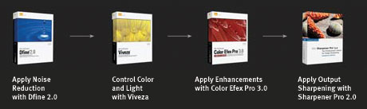
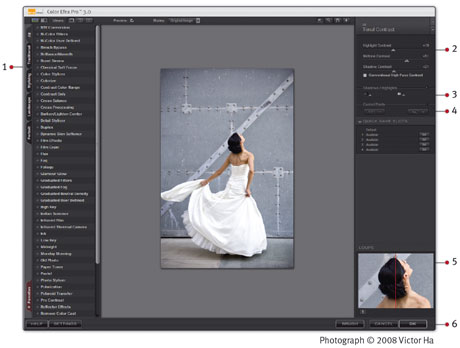

General Workflow
The order of steps involved in enhancing an image varies, depending on the image. In general, there are only a few guidelines to consider:
Start with characteristics that affect the entire image, such as color
casts, contrast and tones. Next, modify elements that affect only localized
areas, such as blemishes and small distracting objects. Finally, apply effects
that add a style or mood to the image. In other words, move from the general
to the specific.

Color Efex Pro 3.0 Workflow
For best results, perform these tasks in the given order:
1) Select the filter to apply to the image from the Filter List.
2) Adjust the filter controls.
3) Protect Shadows & Highlights, if necessary.
4) Use U Point®-powered Control Points, if desired.
5) Review the image in the Loupe.
6) Apply the filter.
